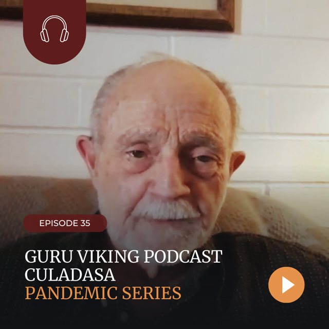
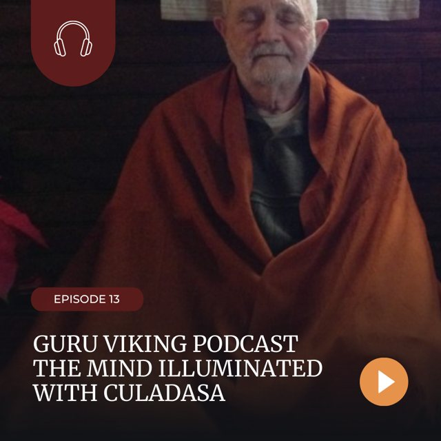
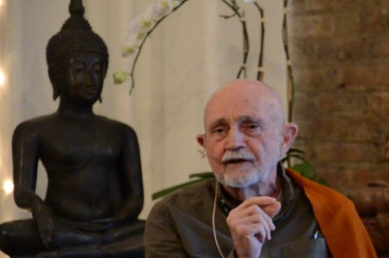
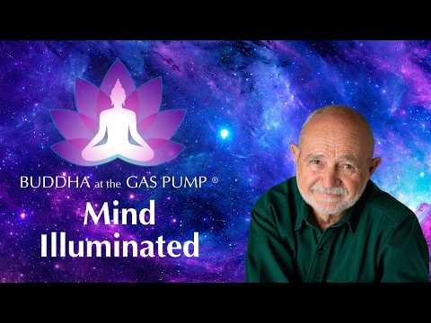
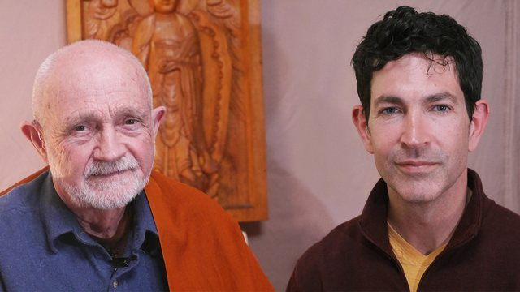
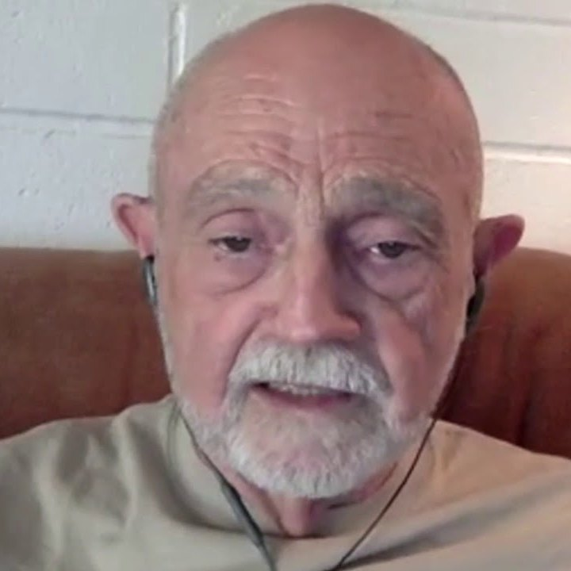

March 2020
Pandemic – Culadasa
Guru Viking Podcast: Pandemic Series, episode 35 · with Guru Viking
Culadasa as the featured guest of the Guru Viking Podcast’s pandemic series, published 20 March 2020.
Upasaka Culadasa · John Yates, Ph.D. · 1945–2021
In conversation
Interviews, podcasts and talks with Culadasa from across the web, and Alex’s index of his AMA sessions.

Guru Viking Podcast: Pandemic Series, episode 35 · with Guru Viking
Culadasa as the featured guest of the Guru Viking Podcast’s pandemic series, published 20 March 2020.

Guru Viking Podcast, episode 13 · with Guru Viking
A long conversation about The Mind Illuminated and his four decades of practice in the Tibetan and Theravādin traditions, and his earlier careers in neuroscience and complementary medicine.

Deconstructing Yourself, DY 022 · with Michael Taft
Whether more people are reaching stream entry these days, what it is, and the retreat centre he and his wife ran in southeastern Arizona. A full transcript is on the page.

Buddha at the Gas Pump, episode 394 · with Rick Archer
A wide-ranging video interview on the mechanics of meditation and consciousness, with a full transcript on the site.

Tricycle Dharma Talks · with Matthew Immergut, Ph.D.
An online retreat for Tricycle, given with his co-author, on getting to know your own mind.

Culadasa on YouTube
A talk from his own YouTube channel on the five insights that lead to awakening.

Culadasa at New York Insight
A talk given at New York Insight Meditation Center, on his YouTube channel.

Community archive by Alex
Every question asked in his 61 AMA sessions from October 2017 to May 2021, transcribed with keywords and links to the exact moment in each video. It powers this site’s Culadasa AMA sessions page and Topics search.
Newsletter
A teaching, an AMA moment or a newly added recording, a few times a year. No more than that.